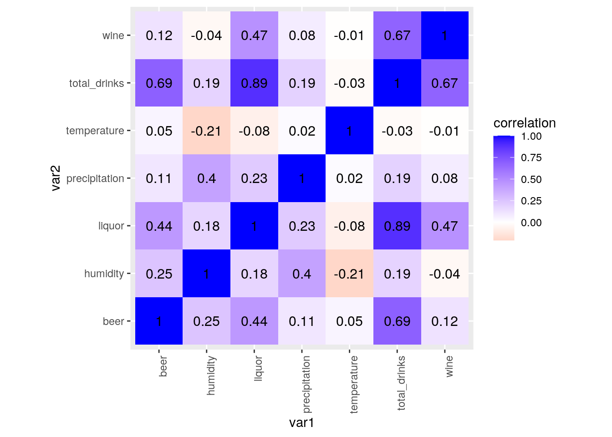
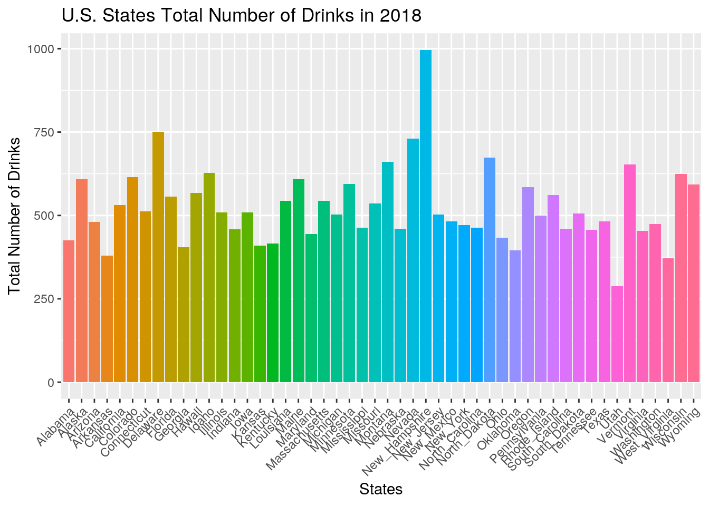
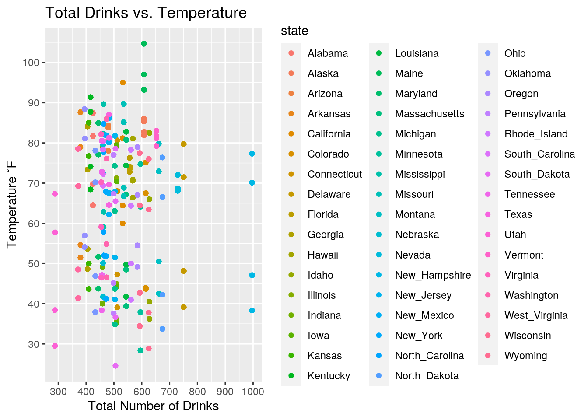
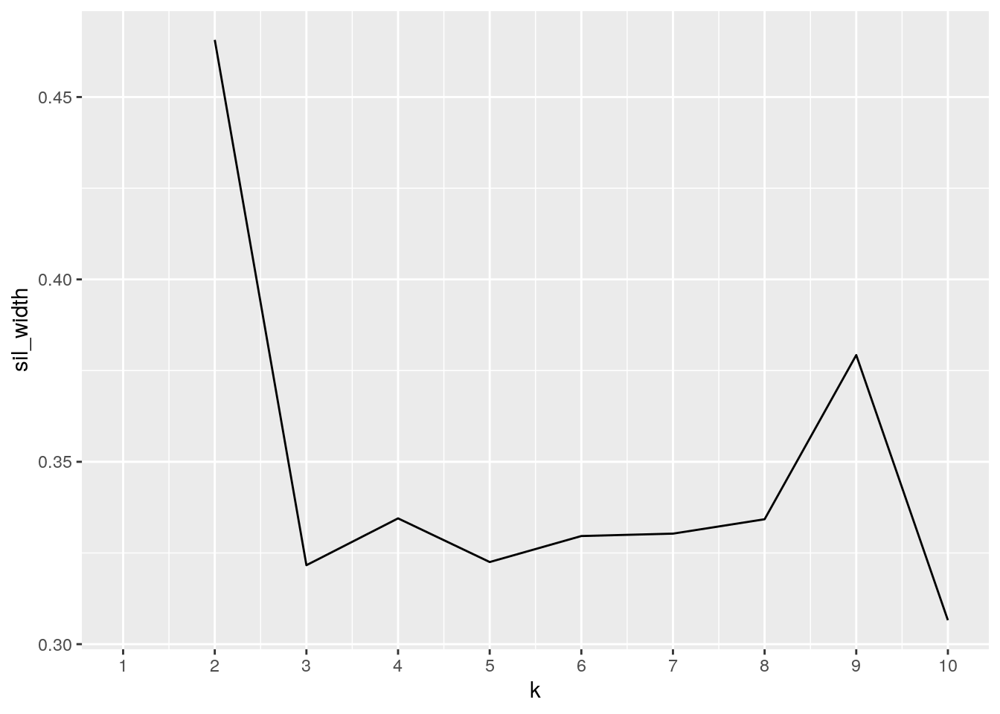
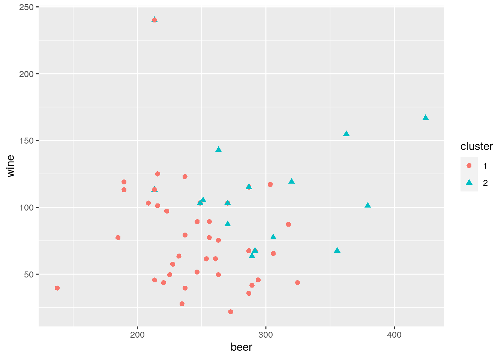
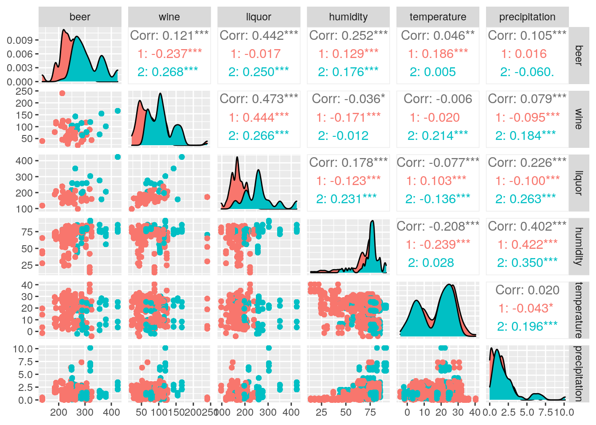
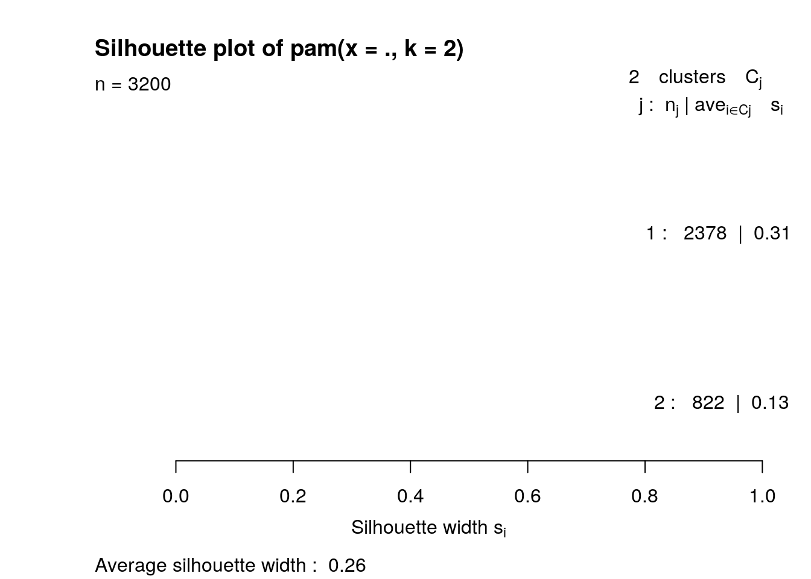

As I began this project, I tried to brainstorm possible associations between variables I found interesting. I was drawn towards datasets that included information about health, pets, or traveling, but had a hard time finding a common variable between the files I found within those topics. Feeling defeated, I tried to brainstorm some of my favorite activities. One of my favorite things to do on a sunny day in Austin is visit a brewery with friends for a drink. This exact pastime lead to the inspiration behind my project.
I scoured the internet for two datasets that provided me with a record of past weather statistics, as well as alcohol consumption in the United States. After some digging, the two datasets I found and have chosen to work with are “2018 US Weather Data” found on Kaggle.com and “1977-2018 USA Alcohol Consumption” found on openICPSR.org. I intend to combine the two through the shared “state” variable. The weather dataset contains the variables, ‘state’, ‘average humidity’, ‘average temperature’, and ‘average pressure’. Average humidity, temperature, and pressure are further broken down by season (spring, summer, fall, winter). Humidity is reported as a percent, temperature is in celsius, precipitation is in millimeters, and pressure is reported in hPa. The alcohol consumption dataset contains the variables, ‘state’, ‘year’, ‘ethanol consumption’ (for beer, wine, and liquor), ‘number of beers’, ‘glasses of wine’, ‘number of liquor shots’, and ‘number of total drinks’. Consumption of ethanol is reported in gallons, and the other categories are reported as number of drinks based upon the ethanol consumption. The most prominent association I expect from these datasets is an increase in drinking with warmer temperatures across all US states. Low humidity and low precipitation would likely lead to more drinking as well.
library(tidyverse)
weather <- read_csv("USA_HistoricalWeather_State.csv")
alcohol <- read_csv("Alcohol_consumption_1977_2018.csv")
glimpse(weather)## Rows: 50
## Columns: 17
## $ state <chr> "Alabama", "Alaska", "Arizona", "Arkansas", "Califo…
## $ avg_hum_spr <dbl> 73.02198, 67.76923, 82.16484, 58.30769, 42.68132, 4…
## $ avg_hum_sum <dbl> 72.58242, 72.43956, 77.15385, 68.10989, 34.84615, 4…
## $ avg_hum_fall <dbl> 75.32609, 78.29348, 79.89130, 68.30435, 24.76087, 4…
## $ avg_hum_wint <dbl> 75.73913, 75.16304, 81.67391, 67.55435, 39.19565, 5…
## $ avg_temp_spr <dbl> 18.076923, 28.197802, 25.582418, 10.824176, 15.5384…
## $ avg_temp_sum <dbl> 27.60440, 30.00000, 29.05495, 26.07692, 27.31868, 1…
## $ avg_temp_fall <dbl> 30.79348, 29.64130, 28.78261, 30.90217, 35.01087, 2…
## $ avg_temp_wint <dbl> 20.989130, 27.739130, 27.021739, 12.576087, 18.0108…
## $ avg_precip_spr <dbl> 1.32417582, 0.08131868, 2.62637363, 0.23186813, 0.2…
## $ avg_precip_sum <dbl> 3.756043956, 2.485714286, 2.190109890, 1.501098901,…
## $ avg_precip_fall <dbl> 6.307608696, 4.276086957, 1.850000000, 1.282608696,…
## $ avg_precip_wint <dbl> 2.841304348, 0.751086957, 3.127173913, 0.541304348,…
## $ avg_pressure_spr <dbl> 1021.978, 1014.451, 1016.363, 1021.077, 1018.505, 1…
## $ avg_pressure_sum <dbl> 1016.000, 1012.297, 1013.099, 1012.945, 1012.505, 1…
## $ avg_pressure_fall <dbl> 1016.272, 1012.598, 1013.946, 1015.217, 1012.207, 1…
## $ avg_pressure_wint <dbl> 1018.380, 1013.261, 1014.098, 1019.087, 1017.293, 1…glimpse(alcohol)## Rows: 2,310
## Columns: 10
## $ state <chr> "Alabama", "alabama", "alabama"…
## $ year <dbl> 2018, 2017, 2016, 2015, 2014, 2…
## $ ethanol_beer_gallons_per_capita <dbl> 1.04, 1.07, 1.09, 1.11, 1.13, 1…
## $ ethanol_wine_gallons_per_capita <dbl> 0.26, 0.26, 0.26, 0.26, 0.25, 0…
## $ ethanol_spirit_gallons_per_capita <dbl> 0.69, 0.67, 0.65, 0.64, 0.62, 0…
## $ ethanol_all_drinks_gallons_per_capita <dbl> 1.99, 1.99, 2.01, 2.01, 2.00, 1…
## $ number_of_beers <dbl> 246.5185, 253.6296, 258.3704, 2…
## $ number_of_glasses_wine <dbl> 51.59690, 51.59690, 51.59690, 5…
## $ number_of_shots_liquor <dbl> 143.2603, 139.1079, 134.9554, 1…
## $ number_of_drinks_total <dbl> 424.5333, 424.5333, 428.8000, 4…While my data was tidy, I decided to make a few changes in order to make further analysis run smoother. First, I used the ‘subset’ function to narrow down the alcohol dataset to each states alcohol consumption just for the year 2018, since the weather file only contained information for 2018. I also dropped the last 5 rows, as well as the columns containing amount of ethanol consumed, since they contained extra information I wasn’t planning on working with. I renamed a few variables within the ‘alcohol’ dataset as well. From the weather dataset, I dropped the last 4 columns pertaining to the pressure in each season, as I was more interested in the humidity, temperature, and precipitation values per state. By doing this, both datasets now contained 50 observations (each of the 50 states) pertaining to the alcohol consumption and weather conditions in 2018. As a final step, I renamed the datasets with their unique modifications.
# final alcohol
finalalcohol <- alcohol %>% subset(year == 2018) %>% slice(-(51:55)) %>%
select(-c(3:6)) %>% rename(beer = number_of_beers) %>% rename(wine = number_of_glasses_wine) %>%
rename(liquor = number_of_shots_liquor) %>% rename(total_drinks = number_of_drinks_total)
# final weather
finalweather <- weather %>% select(-c(14:17))To join the two datasets, I combined them on the common ID variable “state”. Both of the files contain all 50 U.S. states in alphabetical order with no duplicates. Since all of the observations in the datasets are the same, with no extras, any of the ‘join’ functions would produce the same output. Inner join, right join, left join, or a full join return the combined datasets with all their corresponding information. Just to be sure all the information from both datasets was preserved, I decided to use the ‘full_join’ function. This function takes all of the states in the alcohol dataset and matches them with the data corresponding to the state’s specific weather information. The final datatset contains each state in a row with it’s alcohol and weather features in the same row. No cases were dropped, since the common ID variables all matched up. If I didn’t drop the last few rows in the alcohol dataset (performed above), they likely would have been dropped since they don’t match up with anything in the weather file. After performing the full join, the combined dataset was saved as ‘proj1’. The final dataset has 50 rows and 18 columns.
# join datasets
proj1 <- full_join(finalalcohol, finalweather, by = "state")
glimpse(proj1)## Rows: 50
## Columns: 18
## $ state <chr> "Alabama", "Alaska", "Arizona", "Arkansas", "Californ…
## $ year <dbl> 2018, 2018, 2018, 2018, 2018, 2018, 2018, 2018, 2018,…
## $ beer <dbl> 246.5185, 251.2593, 256.0000, 213.3333, 237.0370, 270…
## $ wine <dbl> 51.59690, 105.17829, 77.39535, 45.64341, 123.03876, 1…
## $ liquor <dbl> 143.2603, 259.5296, 164.0227, 132.8792, 180.6326, 255…
## $ total_drinks <dbl> 424.5333, 608.0000, 480.0000, 379.7333, 531.2000, 614…
## $ avg_hum_spr <dbl> 73.02198, 67.76923, 82.16484, 58.30769, 42.68132, 46.…
## $ avg_hum_sum <dbl> 72.58242, 72.43956, 77.15385, 68.10989, 34.84615, 43.…
## $ avg_hum_fall <dbl> 75.32609, 78.29348, 79.89130, 68.30435, 24.76087, 49.…
## $ avg_hum_wint <dbl> 75.73913, 75.16304, 81.67391, 67.55435, 39.19565, 53.…
## $ avg_temp_spr <dbl> 18.076923, 28.197802, 25.582418, 10.824176, 15.538462…
## $ avg_temp_sum <dbl> 27.60440, 30.00000, 29.05495, 26.07692, 27.31868, 19.…
## $ avg_temp_fall <dbl> 30.79348, 29.64130, 28.78261, 30.90217, 35.01087, 23.…
## $ avg_temp_wint <dbl> 20.989130, 27.739130, 27.021739, 12.576087, 18.010870…
## $ avg_precip_spr <dbl> 1.32417582, 0.08131868, 2.62637363, 0.23186813, 0.228…
## $ avg_precip_sum <dbl> 3.756043956, 2.485714286, 2.190109890, 1.501098901, 0…
## $ avg_precip_fall <dbl> 6.307608696, 4.276086957, 1.850000000, 1.282608696, 0…
## $ avg_precip_wint <dbl> 2.841304348, 0.751086957, 3.127173913, 0.541304348, 0…In order to effectively generate summary statistics, I started off by using the function ‘pivot_longer’ to combine my 3 weather variables (humidity, temperature, and precipitation) into their own unique column, with the ‘season’ column pertaining to humidity seasons, ‘season2’ going along with the temperature seasons, and ‘season3’ belonging to the seasons in precipitation. This form of my ‘proj1’ dataset was saved as ‘wranglingproj1’. I used both ‘proj1’ and ‘wranglingproj1’ in this section. The first thing I attempted to do was observe the maximum, minimum, average, and standard deviation of all the numeric variables in my ‘proj1’ dataset. From these codes, I found the standard deviations to be most interesting, with ‘total_drinks’ having the highest standard deviation (most variability) and precipitation amongst all seasons having the least (least variability). Afterwards, I identified which state consumed the most/least least amount of drinks by investigating the ‘total_drinks’ variable. New Hampshire consumed the most drinks at 996.27, while Utah consumed the least at 288 total drinks. Knowing this, I was eager to look further into the highest temperature variables in these two states and break them down by which season they occurred in. New Hampshire’s temperature reached a high of 77˚F in the fall, while Utah’s high temperature only reached 67˚F in the fall. I was also eager to look at the ‘beer’, ‘wine’, and ‘liquor’ variables and identify which states drank the most of each. New Hampshire drank the most beer and liquor at 424 units of liquor and 425 units of beer, and Idaho drank the most wine at 240 drinks. Lastly, I analyzed how many states drank more than the U.S. average. 21 out of the 50 states drank more than 525 units of alcohol, which is roughly 42%.
# tidy functions on proj1
wranglingproj1 <- proj1 %>% pivot_longer(cols = c(7:10), names_to = "season",
values_to = "humidity") %>% pivot_longer(cols = c(7:10),
names_to = "season2", values_to = "temperature") %>% pivot_longer(cols = c(7:10),
names_to = "season3", values_to = "precipitation")
glimpse(wranglingproj1)## Rows: 3,200
## Columns: 12
## $ state <chr> "Alabama", "Alabama", "Alabama", "Alabama", "Alabama", …
## $ year <dbl> 2018, 2018, 2018, 2018, 2018, 2018, 2018, 2018, 2018, 2…
## $ beer <dbl> 246.5185, 246.5185, 246.5185, 246.5185, 246.5185, 246.5…
## $ wine <dbl> 51.5969, 51.5969, 51.5969, 51.5969, 51.5969, 51.5969, 5…
## $ liquor <dbl> 143.2603, 143.2603, 143.2603, 143.2603, 143.2603, 143.2…
## $ total_drinks <dbl> 424.5333, 424.5333, 424.5333, 424.5333, 424.5333, 424.5…
## $ season <chr> "avg_hum_spr", "avg_hum_spr", "avg_hum_spr", "avg_hum_s…
## $ humidity <dbl> 73.02198, 73.02198, 73.02198, 73.02198, 73.02198, 73.02…
## $ season2 <chr> "avg_temp_spr", "avg_temp_spr", "avg_temp_spr", "avg_te…
## $ temperature <dbl> 18.07692, 18.07692, 18.07692, 18.07692, 27.60440, 27.60…
## $ season3 <chr> "avg_precip_spr", "avg_precip_sum", "avg_precip_fall", …
## $ precipitation <dbl> 1.324176, 3.756044, 6.307609, 2.841304, 1.324176, 3.756…# maximum number of all variables
proj1_max <- proj1 %>% select(-state, -year) %>% summarize_if(is.numeric,
max, na.rm = T)
proj1_max## # A tibble: 1 x 16
## beer wine liquor total_drinks avg_hum_spr avg_hum_sum avg_hum_fall
## <dbl> <dbl> <dbl> <dbl> <dbl> <dbl> <dbl>
## 1 424. 240. 424. 996. 89.6 90.3 85.3
## # … with 9 more variables: avg_hum_wint <dbl>, avg_temp_spr <dbl>,
## # avg_temp_sum <dbl>, avg_temp_fall <dbl>, avg_temp_wint <dbl>,
## # avg_precip_spr <dbl>, avg_precip_sum <dbl>, avg_precip_fall <dbl>,
## # avg_precip_wint <dbl># minimum number of all variables
proj1_min <- proj1 %>% select(-state, -year) %>% summarize_if(is.numeric,
min, na.rm = T)
proj1_min## # A tibble: 1 x 16
## beer wine liquor total_drinks avg_hum_spr avg_hum_sum avg_hum_fall
## <dbl> <dbl> <dbl> <dbl> <dbl> <dbl> <dbl>
## 1 137. 21.8 97.6 288 13.9 22.1 24.8
## # … with 9 more variables: avg_hum_wint <dbl>, avg_temp_spr <dbl>,
## # avg_temp_sum <dbl>, avg_temp_fall <dbl>, avg_temp_wint <dbl>,
## # avg_precip_spr <dbl>, avg_precip_sum <dbl>, avg_precip_fall <dbl>,
## # avg_precip_wint <dbl># average of all variables
proj1_means <- proj1 %>% select(-state, -year) %>% summarize_if(is.numeric,
mean, na.rm = T)
proj1_means## # A tibble: 1 x 16
## beer wine liquor total_drinks avg_hum_spr avg_hum_sum avg_hum_fall
## <dbl> <dbl> <dbl> <dbl> <dbl> <dbl> <dbl>
## 1 262. 84.3 194. 526. 68.9 67.7 69.5
## # … with 9 more variables: avg_hum_wint <dbl>, avg_temp_spr <dbl>,
## # avg_temp_sum <dbl>, avg_temp_fall <dbl>, avg_temp_wint <dbl>,
## # avg_precip_spr <dbl>, avg_precip_sum <dbl>, avg_precip_fall <dbl>,
## # avg_precip_wint <dbl># standard deviation of all variables
proj1_sd <- proj1 %>% select(-state, -year) %>% summarize_if(is.numeric,
sd, na.rm = T)
proj1_sd## # A tibble: 1 x 16
## beer wine liquor total_drinks avg_hum_spr avg_hum_sum avg_hum_fall
## <dbl> <dbl> <dbl> <dbl> <dbl> <dbl> <dbl>
## 1 52.8 40.4 59.4 116. 13.5 13.0 16.1
## # … with 9 more variables: avg_hum_wint <dbl>, avg_temp_spr <dbl>,
## # avg_temp_sum <dbl>, avg_temp_fall <dbl>, avg_temp_wint <dbl>,
## # avg_precip_spr <dbl>, avg_precip_sum <dbl>, avg_precip_fall <dbl>,
## # avg_precip_wint <dbl># state that drinks the most
proj1 %>% select(state, total_drinks) %>% arrange(desc(total_drinks))## # A tibble: 50 x 2
## state total_drinks
## <chr> <dbl>
## 1 New_Hampshire 996.
## 2 Delaware 751.
## 3 Nevada 730.
## 4 North_Dakota 674.
## 5 Montana 661.
## 6 Vermont 653.
## 7 Idaho 627.
## 8 Wisconsin 625.
## 9 Colorado 614.
## 10 Alaska 608
## # … with 40 more rows# state that drinks the least
proj1 %>% select(state, total_drinks) %>% arrange(total_drinks)## # A tibble: 50 x 2
## state total_drinks
## <chr> <dbl>
## 1 Utah 288
## 2 West_Virginia 371.
## 3 Arkansas 380.
## 4 Oklahoma 395.
## 5 Georgia 405.
## 6 Kansas 410.
## 7 Kentucky 416
## 8 Alabama 425.
## 9 Ohio 433.
## 10 Maryland 444.
## # … with 40 more rows# mutate temperature + New Hampshire's temperature (most
# drinks)
wranglingproj1 %>% mutate(temperatureF = (temperature * 9/5) +
32) %>% filter(state == "New_Hampshire") %>% select(temperatureF,
season2) %>% arrange(desc(temperatureF))## # A tibble: 64 x 2
## temperatureF season2
## <dbl> <chr>
## 1 77.3 avg_temp_fall
## 2 77.3 avg_temp_fall
## 3 77.3 avg_temp_fall
## 4 77.3 avg_temp_fall
## 5 77.3 avg_temp_fall
## 6 77.3 avg_temp_fall
## 7 77.3 avg_temp_fall
## 8 77.3 avg_temp_fall
## 9 77.3 avg_temp_fall
## 10 77.3 avg_temp_fall
## # … with 54 more rows# mutate temperature + Utah's temperature (least drinks)
wranglingproj1 %>% mutate(temperatureF = (temperature * 9/5) +
32) %>% filter(state == "Utah") %>% select(temperatureF,
season2) %>% arrange(desc(temperatureF))## # A tibble: 64 x 2
## temperatureF season2
## <dbl> <chr>
## 1 67.3 avg_temp_fall
## 2 67.3 avg_temp_fall
## 3 67.3 avg_temp_fall
## 4 67.3 avg_temp_fall
## 5 67.3 avg_temp_fall
## 6 67.3 avg_temp_fall
## 7 67.3 avg_temp_fall
## 8 67.3 avg_temp_fall
## 9 67.3 avg_temp_fall
## 10 67.3 avg_temp_fall
## # … with 54 more rows# state that drinks the most beer
proj1 %>% select(state, beer) %>% arrange(desc(beer))## # A tibble: 50 x 2
## state beer
## <chr> <dbl>
## 1 New_Hampshire 424.
## 2 Montana 379.
## 3 Vermont 363.
## 4 North_Dakota 356.
## 5 South_Dakota 325.
## 6 Nevada 320
## 7 Maine 318.
## 8 Pennsylvania 306.
## 9 Wisconsin 306.
## 10 Hawaii 303.
## # … with 40 more rows# state that drinks the most wine
proj1 %>% select(state, wine) %>% arrange(desc(wine))## # A tibble: 50 x 2
## state wine
## <chr> <dbl>
## 1 Idaho 240.
## 2 New_Hampshire 167.
## 3 Vermont 155.
## 4 Delaware 143.
## 5 Massachusetts 125.
## 6 California 123.
## 7 Connecticut 119.
## 8 Nevada 119.
## 9 Hawaii 117.
## 10 Oregon 115.
## # … with 40 more rows# state that drinks the most liquor
proj1 %>% select(state, liquor) %>% arrange(desc(liquor))## # A tibble: 50 x 2
## state liquor
## <chr> <dbl>
## 1 New_Hampshire 424.
## 2 Delaware 351.
## 3 Nevada 303.
## 4 North_Dakota 276.
## 5 Alaska 260.
## 6 Wisconsin 260.
## 7 Wyoming 257.
## 8 Colorado 255.
## 9 Minnesota 251.
## 10 Rhode_Island 239.
## # … with 40 more rows# number of states that drink GREATER than the average total
# # of drinks
proj1 %>% filter(total_drinks >= 525) %>% summarize(n_distinct(state))## # A tibble: 1 x 1
## `n_distinct(state)`
## <int>
## 1 21To finish off my summary statistics section, I utilized the ‘wranglingproj1’ dataset to look at the average weather values across the 50 states based upon season. From this, I was able to see that fall had the most humidity at 69%, the highest temperature at 80.5˚F, and the most precipitation at 2 millimeters. As far as the lows, spring had the least precipitation at 1.1 millimeters, the coolest temperature at 50˚F, while summer had the least humidity at 68%. To transition into the visualization section, I computed correlations amongst all the variables in the ‘wranglingproj1’ dataset.
# mean humidity per season (%)
wranglingproj1 %>% select(-state, -year) %>% group_by(season) %>%
summarize(mean(humidity))## # A tibble: 4 x 2
## season `mean(humidity)`
## <chr> <dbl>
## 1 avg_hum_fall 69.5
## 2 avg_hum_spr 68.9
## 3 avg_hum_sum 67.7
## 4 avg_hum_wint 69.3# mean temperature per season (˚F)
wranglingproj1 %>% select(-state, -year) %>% group_by(season2) %>%
mutate(temperatureF = (temperature * 9/5) + 32) %>% summarize(mean(temperatureF))## # A tibble: 4 x 2
## season2 `mean(temperatureF)`
## <chr> <dbl>
## 1 avg_temp_fall 80.5
## 2 avg_temp_spr 50.3
## 3 avg_temp_sum 72.8
## 4 avg_temp_wint 56.2# mean precipitation per season (mm)
wranglingproj1 %>% select(-state, -year) %>% group_by(season3) %>%
summarize(mean(precipitation))## # A tibble: 4 x 2
## season3 `mean(precipitation)`
## <chr> <dbl>
## 1 avg_precip_fall 2.07
## 2 avg_precip_spr 1.11
## 3 avg_precip_sum 1.73
## 4 avg_precip_wint 1.46# correlation between drinks + humidity, temperature, and
# precipitation
cor2 <- wranglingproj1 %>% select(-state, -year) %>% select_if(is.numeric) %>%
cor(use = "pair")
tidycor2 <- cor2 %>% as.data.frame %>% rownames_to_column("var1") %>%
pivot_longer(-1, names_to = "var2", values_to = "correlation")
tidycor2## # A tibble: 49 x 3
## var1 var2 correlation
## <chr> <chr> <dbl>
## 1 beer beer 1
## 2 beer wine 0.121
## 3 beer liquor 0.442
## 4 beer total_drinks 0.687
## 5 beer humidity 0.252
## 6 beer temperature 0.0459
## 7 beer precipitation 0.105
## 8 wine beer 0.121
## 9 wine wine 1
## 10 wine liquor 0.473
## # … with 39 more rowsA correlation heatmap of ‘tidycor2’ was generated first. Within this heatmap, the strongest correlation is between ‘total_drinks’ and ‘liquor’, likely indicating that states with higher liquor values also have higher total drink values. The next strongest correlation is between ‘total_drinks’ and ‘beer’. The weather variables had weak, even negative correlations with the drinking variables.
# correlation heatmap of tidycor2
tidycor2 %>% ggplot(aes(var1, var2, fill = correlation)) + geom_tile() +
scale_fill_gradient2(low = "red", mid = "white", high = "blue") +
geom_text(aes(label = round(correlation, 2)), color = "black",
size = 4) + theme(axis.text.x = element_text(angle = 90,
hjust = 1)) + coord_fixed() Since I predicted a relationship between temperature and total number of drinks in the first place, I aimed to create a visualization of these variables. I started off by creating a bar plot to observe the total number of drinks in all 50 states. After getting an idea of which states drank the most and least in 2018, I created a scatter plot of total drinks versus temperature (in fahrenheit), color coded by state. At a glance, it’s easy to tell that there is no true relationship between these variables, as the points are spread out all across the graph. This idea is backed up by the correlation coefficient of -0.03 found on the heatmap. The second thing that stands out from this graph is the pink dots on the far left (less drinking) and blue dots on the far right (more drinking), as well as the green dots on the top of the graph (high temperatures). By looking at the legend, we are able to match these dots with the state they come from, such as Louisiana or Maine having high temperatures for example.
ggplot(proj1, aes(state, fill = state), stat = summary) + geom_bar(aes(y = total_drinks),
stat = "summary", fun = mean) + theme(axis.text.x = element_text(angle = 45,
hjust = 1), legend.position = "none") + xlab("States") +
ylab("Total Number of Drinks") + ggtitle("U.S. States Total Number of Drinks in 2018")
wranglingproj1 %>% mutate(temperatureF = (temperature * 9/5) +
32) %>% ggplot(aes(total_drinks, temperatureF, color = state)) +
geom_point() + xlab("Total Number of Drinks") + ylab("Temperature ˚F") +
ggtitle("Total Drinks vs. Temperature") + scale_x_continuous(n.breaks = 8) +
scale_y_continuous(n.breaks = 8)
As a final step to my project, I performed k-means/PAM on my variables.To start off, I processed my data, making sure to scale all of my numeric variables. I chose the number 2 as my number of clusters, just as a placeholder. Afterwards, I used the silhouette method to find the best number of clusters (k) for my data. From the graph generated, k=2 seemed to be the best number of clusters for my dataset, since it maximized the silhouette width. From here, I ran the PAM cluster analysis with two clusters and created two different graphs to better visualize the clusters. While the first graph only plotted the variables ‘beer’ and ‘wine’, I was able to tell that the higher drink values were in the second cluster, whereas the lower values were in the first. After this, I used ‘ggpairs’ to create a correlation matrix between my variables, along with their assigned cluster. The most important thing to note from these graphs was that the correlations between all variables and their clusters was extremely low, never reaching over 0.5/-0.5. This lead me to believe my clusters would have a weak structure. From here, I computed the means from each variable in both clusters and matched them with the most representative medoid. Cluster one had lower values that best resembled New Mexico, whereas cluster two had higher values that best resembled Wisconsin. In order to truly discover how well my clusters fit my data, I computed a unique value for my data’s silhouette width and plotted it. According to my results, my average silhouette width is 0.26, which means my clusters are lacking a substantial structure, just as I hypothesized.
# process data
library(cluster)
library(tidyverse)
clust_dat <- wranglingproj1 %>% select(beer, wine, liquor, total_drinks,
humidity, temperature, precipitation)
pam1 <- clust_dat %>% scale %>% pam(k = 2)
pam1## Medoids:
## ID beer wine liquor total_drinks humidity temperature
## [1,] 1944 -0.1604126 -0.5689748 -0.152424 -0.3779436 0.02824333 0.14802406
## [2,] 3095 0.8365019 -0.1724767 1.117776 0.8670033 0.69049358 -0.08701342
## precipitation
## [1,] -0.39209421
## [2,] -0.09288232
## Clustering vector:
## [1] 1 1 1 1 1 1 1 1 1 1 1 1 1 1 1 1 1 1 1 1 1 1 1 1 1 1 1 1 1 1 1 1 1 1 1 1 1
## [38] 1 1 1 1 1 1 1 1 1 1 1 1 1 1 1 1 1 1 1 1 1 1 1 1 1 1 1 2 2 2 2 2 2 2 2 2 2
## [75] 2 2 2 2 2 2 2 2 2 2 2 2 2 2 2 2 2 2 2 2 2 2 2 2 2 2
## [ reached getOption("max.print") -- omitted 3100 entries ]
## Objective function:
## build swap
## 2.211684 2.199757
##
## Available components:
## [1] "medoids" "id.med" "clustering" "objective" "isolation"
## [6] "clusinfo" "silinfo" "diss" "call" "data"# choose number of clusters + plot
library(cluster)
sil_width <- vector()
for (i in 2:10) {
kms <- kmeans(clust_dat, centers = i)
sil <- silhouette(kms$cluster, dist(clust_dat))
sil_width[i] <- mean(sil[, 3])
}
ggplot() + geom_line(aes(x = 1:10, y = sil_width)) + scale_x_continuous(name = "k",
breaks = 1:10)
# using PAM + visualize clusters
pamclust <- clust_dat %>% mutate(cluster = as.factor(pam1$clustering))
pamclust %>% ggplot(aes(beer, wine, liquor, humidity, temperature,
precipitation, color = cluster, shape = cluster)) + geom_point(size = 2)
library(GGally)
wranglingproj1 %>% mutate(cluster = as.factor(pam1$clustering)) %>%
ggpairs(columns = c("beer", "wine", "liquor", "humidity",
"temperature", "precipitation"), aes(color = cluster))
# summarize clusters (means of each variable)
pamclust %>% group_by(cluster) %>% summarize_if(is.numeric, mean,
na.rm = T)## # A tibble: 2 x 8
## cluster beer wine liquor total_drinks humidity temperature precipitation
## <fct> <dbl> <dbl> <dbl> <dbl> <dbl> <dbl> <dbl>
## 1 1 245. 76.0 170. 477. 66.7 18.9 1.40
## 2 2 310. 108. 263. 665. 75.2 16.5 2.15# final medoids (most representative of clusters)
wranglingproj1 %>% slice(pam1$id.med)## # A tibble: 2 x 12
## state year beer wine liquor total_drinks season humidity season2
## <chr> <dbl> <dbl> <dbl> <dbl> <dbl> <chr> <dbl> <chr>
## 1 New_… 2018 254. 61.5 185. 482. avg_h… 69.2 avg_te…
## 2 Wisc… 2018 306. 77.4 260. 625. avg_h… 78.5 avg_te…
## # … with 3 more variables: temperature <dbl>, season3 <chr>,
## # precipitation <dbl># goodness of fit with cluster numbers
pam1$silinfo$avg.width## [1] 0.2632274plot(pam1, which = 2)